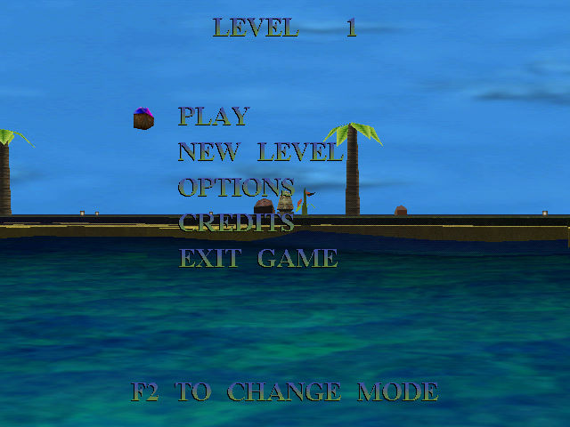
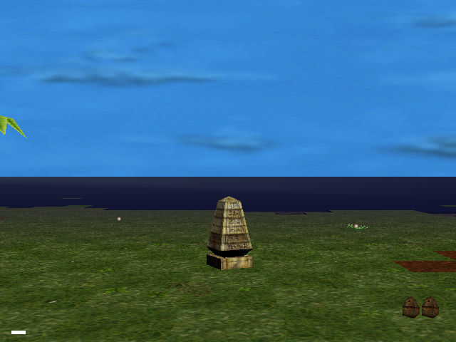

名稱：千禧孤島／千僖孤島 (Archipelagos 2000，英文版) 簡介：Anthill 1999年出品的動作策略遊戲，為1989年同名遊戲的重製版。每個關卡的目標 是摧毀所有巨石，然後在90秒內到達石碑並將其摧毀 [待補]。   保護：無，放入光碟才有背景音樂 備註：VirtualBox或VMware+XP均有貼圖問題，建議在PCem/86Box+Win9x或Win64系統上執行。

